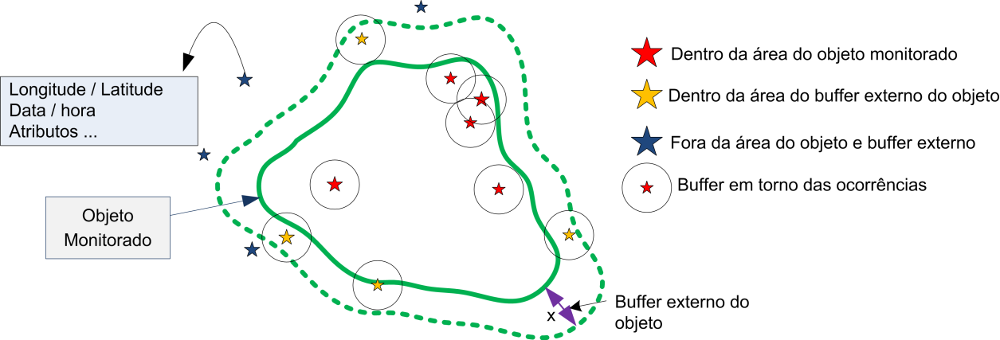

Operadores de Ocorrências
Operadores de ocorrências podem ser zonais quando utilizados para obter estatísticas sobre as fontes de dados do tipo de ocorrências, considerando a localização dos pontos de ocorrências e seus atributos que interceptam as geometrias (pontos, linhas ou polígonos) dos objetos a serem monitorados ou suas áreas de influência (buffer) num intervalo de tempo passado. Também há operadores que não são zonais, mas utilizam atributos comuns das ocorrências e o objeto monitorado para realizar sumarizações, sem necessidade de utilizar operações espaciais.
A Figura 3.20 mostra os pontos de ocorrência em relação a um objeto monitorado na forma de polígono. Ocorrências podem estar dentro do polígono, na área do “buffer” (depende do tipo de utilitário “buffer” utilizado) ou não fazem interseção espacial com o polígono nem o seu “buffer”. Veremos um grupo de operadores onde um segundo “buffer” poderá ser utilizado sobre cada ocorrência para verificar se há pontos de ocorrências sobrepostos e assim considerar como uma única.

Figura 3.20 – Diferentes situações de ocorrências em relação a um objeto monitorado.
Estes operadores são divididos em quatro grupos: Sumário, Zonal, Zonal por intervalos e Zonal por agregação. A descrição de cada tipo a seguir.
1- Sumário (Summary)
Operador que realiza a sumarização de ocorrências no intervalo de tempo definido entre a data/hora atual e o valor de tempo informado no passado. Deve-se indicar um atributo que identifica unicamente os objetos e o mesmo nas ocorrências que são comuns.
SINTAXE GERAL:
occurrence.<operator>("<dynamic_data_occurrence>", "<time>", “<monitored_identifier>”, “<additional_identifier>”, ["<restriction>"])
onde:
- operator: count
- dynamic_data_occurrence: String com o nome da série de dados de ocorrências;
- time: String com o intervalo de tempo, a partir da hora atual, para filtrar as ocorrências. Este intervalo será aberto (< x) no valor informado e fechado ( = ) na hora atual. Ver utilitário unidades de tempo;
- monitored_identifier: nome do atributo do objeto monitorado que será utilizado para se ligar os dados de ocorrências por outro atributo definido no <additional_identifier>. Utilize um atributo de identifique unicamente cada objeto;
- additional_identifier: nome do atributo dos dados dinâmicos de ocorrência que será utilizado para se ligar ao objeto monitorado por outro atributo definido no <monitored_identifier>;
- restriction: [Opcional] String com a restrição SQL a ser aplicada sobre atributos do dado dinâmico de ocorrência. Não utilizar se não houver restrição.
Segue a descrição de cada operador.
Sumário: Contagem
Retorna a quantidade de ocorrências sumarizadas no intervalo de tempo definido entre a data/hora atual e o valor de tempo informado no passado.
Sintaxe:
occurrence.count("<dynamic_data_occurrence>", "<time>", “<monitored_identifier>”, “<additional_identifier>”, ["<restriction>"])
Exemplo: # exemplo
x = occurrence.count("ocorrencias", "1d", "geocodigo", "cod_ibge" "UF = ‘AM’")
Nota: Os nomes dos atributos não precisam ser iguais, assim como o tipo também não precisa ser o mesmo, pois o operador faz os ajustes para tipos diferentes. Importante é que o conteúdo seja o mesmo para que haja correspondência.
2- Zonal
Grupo de operadores que consideram as ocorrências que interceptam o objeto monitorado ou sua área de influência (buffer) no intervalo de tempo definido entre a data/hora atual e o valor de tempo informado no passado.
SINTAXE GERAL:
occurrence.zonal.<operator>("<dynamic_data_occurrence>", "<attribute>", "<time>", [<buffer>], ["<restriction>"])
onde:
- operator: count, min, max, mean, sum, median, standard_deviation, variance
- dynamic_data_occurrence: String com o nome da série de dados de ocorrências;
- attribute: String com o nome do atributo da ocorrência que deve ser utilizado para recuperar algum valor associado a ocorrência. O atributo deve ser do tipo numérico (Ex. Integer, Float, Double, Long). Não usar para operador “count”;
- time: String com o intervalo de tempo, a partir da hora atual, para filtrar as ocorrências. Este intervalo será aberto (< x) no valor informado e fechado ( = ) na hora atual. Ver utilitário unidades de tempo;
- buffer: [Opcional] “Buffer” para ser aplicado ao objeto monitorado. Parâmetro obrigatório somente se o parâmetro seguinte (restriction) for utilizado. Se não declarado será considerada a própria geometria do objeto (no caso do um mapa de polígonos, a própria área do polígono é utilizada). Ver utilitário “buffer” acima;
- restriction: [Opcional] String com a restrição SQL a ser aplicada sobre atributos do dado dinâmico de ocorrência. Não utilizar se não houver restrição. Se for utilizada a restrição, obrigatoriamente o parâmetro de buffer acima deve ser declarado, mesmo que o buffer seja nulo.
Segue a descrição de cada operador.
Zonal: Contagem
Retorna a quantidade de ocorrências que interceptam o objeto monitorado ou sua área de influência (buffer) no intervalo de tempo definido entre a data/hora atual e o valor de tempo informado no passado.
Sintaxe:
occurrence.zonal.count("<dynamic_data_occurrence>", "<time>", [<buffer>], ["<restriction>"])
Exemplo: # exemplo com buffer e com restrição
buf1 = Buffer(BufferType.Level, 400, "m", 200, "m")
x = occurrence.zonal.count("ocorrencias", "1d", buf1, "UF = ‘AM’")
# exemplo sem buffer e sem restrição
x = occurrence.zonal.count("ocorrencias", "1d+")
# exemplo sem buffer e com restrição
buf1 = Buffer()
x = occurrence.zonal.count("ocorrencias", "1d", buf1, "UF = ‘AM’")
# ou
x = occurrence.zonal.count("ocorrencias", "1d", Buffer(), "UF = ‘AM’")
Zonal: Mínimo
Retorna o menor valor do atributo das ocorrências que interceptam o objeto monitorado ou sua área de influência (buffer) no intervalo de tempo definido entre a data/hora atual e o valor de tempo informado no passado.
Sintaxe:
occurrence.zonal.min("<dynamic_data_occurrence>", "<attribute>", "<time>", [<buffer>], ["<restriction>"])
Exemplo: buf1 = Buffer()
x = occurrence.zonal.min("foco", "intensidade","1d", buf1, "UF = ‘AM’")
Zonal: Máximo
Retorna o maior valor do atributo das ocorrências que interceptam o objeto monitorado ou sua área de influência (buffer) no intervalo de tempo definido entre a data/hora atual e o valor de tempo informado no passado.
Sintaxe:
occurrence.zonal.max("<dynamic_data_occurrence>", "<attribute>", "<time>", [<buffer>], ["<restriction>"])
Exemplo: buf1 = Buffer()
x = occurrence.zonal.max("ocorrencias", "Intensidade", "1d", buf1, "UF = ‘AM’")
Zonal: Média
Retorna a média dos valores do atributo das ocorrências que interceptam o objeto monitorado ou sua área de influência (buffer) no intervalo de tempo definido entre a data/hora atual e o valor de tempo informado no passado.
Sintaxe:
occurrence.zonal.mean("<dynamic_data_occurrence>", "<attribute>", "<time>", [<buffer>], ["<restriction>"])
Exemplo: buf1 = Buffer()
x = occurrence.zonal.mean("ocorrencias", "intensidade", "1d", buf1, "UF = ‘AM’")
Zonal: Mediana
Retorna a mediana dos valores do atributo das ocorrências que interceptam o objeto monitorado ou sua área de influência (buffer) no intervalo de tempo definido entre a data/hora atual e o valor de tempo informado no passado.
Sintaxe:
occurrence.zonal.median("<dynamic_data_occurrence>", "<attribute>", "<time>", [<buffer>], ["<restriction>"])
Exemplo: buf1 = Buffer()
x = occurrence.zonal.median("ocorrencias", "intensidade", "1d", buf1, "UF = 'AM'")
Zonal: Soma
Retorna a soma dos valores do atributo das ocorrências que interceptam o objeto monitorado ou sua área de influência (buffer) no intervalo de tempo definido entre a data/hora atual e o valor de tempo informado no passado.
Sintaxe:
occurrence.zonal.sum("<dynamic_data_occurrence>", "<attribute>", "<time>", [<buffer>], ["<restriction>"])
Exemplo: buf1 = Buffer()
x = occurrence.zonal.sum("ocorrencias", "intensidade", "1d", buf1, "UF = 'AM'")
Zonal: Desvio Padrão
Retorna o desvio padrão dos valores do atributo das ocorrências que interceptam o objeto monitorado ou sua área de influência (buffer) no intervalo de tempo definido entre a data/hora atual e o valor de tempo informado no passado.
Sintaxe:
occurrence.zonal.standard_deviation("<dynamic_data_occurrence>", "<attribute>", "<time>", [<buffer>], ["<restriction>"])
Exemplo: buf1 = Buffer(BufferType.Level, 400, “m“, 200, “m”)
x = occurrence.zonal.standard_deviation("ocorrencias", "intensidade", "1d", buf1)
Zonal: Variância
Retorna a variância dos valores do atributo das ocorrências que interceptam o objeto monitorado ou sua área de influência (buffer) no intervalo de tempo definido entre a data/hora atual e o valor de tempo informado no passado.
Sintaxe:
occurrence.zonal.variance("<dynamic_data_occurrence>", "<attribute>", "<time>", [<buffer>], ["<restriction>"])
Exemplo: x = occurrence.zonal.variance("ocorrencias", "1d", "Intensidade")
3- Zonal por agregação
Grupo de operadores que consideram as ocorrências agrupadas em torno do mesmo ponto e que interceptam o objeto monitorado ou sua área de influência (buffer) no intervalo de tempo definido entre a data/hora atual e o valor de tempo informado no passado. Para verificar as ocorrências agrupadas um outro “buffer” nas ocorrências é definido.
SINTAXE GERAL:
occurrence.zonal.aggregation.<operator>("<dynamic_data_occurrence>", "<attribute>", "<time>",aggregationStatistic, aggregationBuffer, [<buffer>], ["<restriction>"])
onde:
- operator: count, min, max, mean, sum, median, standard_deviation, variance
- dynamic_data_occurrence : String com o nome da série de dados de ocorrências;
- attribute: String com o nome do atributo da ocorrência que deve ser utilizado para recuperar os valores, o atributo deve ser do tipo numérico (Ex. Integer, Float, Double, Long). Não usar para operador “count”;
- time: String com o intervalo de tempo, a partir da hora atual, para filtrar as ocorrências. Ver utilitário Unidades de tempo;
- aggregationStatistic: Tipo de operador estatístico a ser utilizado para selecionar o valor do atributo para as ocorrências agregadas. Não usar para operador “count”;
- aggregationBuffer: Buffer para agregação dos pontos de ocorrência. Ver utilitário Buffer;
- buffer: [Opcional] “Buffer” para ser aplicado ao objeto monitorado. Parâmetro obrigatório somente se o parâmetro seguinte (restriction) for utilizado. Se não declarado será considerada a própria geometria do objeto (no caso do um mapa de polígonos, a própria área do polígono é utilizada). Ver utilitário “buffer” acima;
- restriction: [Opcional] String com a restrição SQL a ser aplicada sobre atributos do dado dinâmico de ocorrência. Não utilizar se não houver restrição. Se for utilizada a restrição, obrigatoriamente o parâmetro de buffer acima deve ser declarado, mesmo que o buffer seja nulo.
Segue a descrição de cada operador.
Zonal por agregação: Contagem
Retorna a quantidade de ocorrências que interceptam o objeto monitorado ou sua área de influência (buffer) no intervalo de tempo definido entre a data/hora atual e o valor de tempo informado no passado. Ocorrências agrupadas em torno do mesmo ponto serão contadas uma única vez.
Sintaxe:
occurrence.zonal.aggregation.count("<dynamic_data_occurrence>", "<time>", aggregationBuffer, [<buffer>], ["<restriction>"])
Exemplo: # exemplo com buffer na ocorrência e no objeto, e com restrição
buf1 = Buffer(BufferType.Level, 400, "m", 200, "m")
bufaggreg = Buffer(BufferType.Out, 200, "m")
x = occurrence.zonal.aggregation.count("foco", "1d", bufaggreg, buf1, "UF = 'AM'")
# exemplo sem buffer no objeto, mas com buffer na ocorrência, e sem restrição
bufaggreg = Buffer(BufferType.Out, 200, "m")
x = occurrence.zonal.aggregation.count("foco", "1d", bufaggreg)
# exemplo sem buffer e com restrição
buf1 = Buffer()
x = occurrence.zonal.aggregation.count("foco", "1d", bufaggreg, buf1, "UF = 'AM'")
# ou
x = occurrence.zonal.aggregation.count("foco", "1d", bufaggreg, Buffer(), "UF = 'AM'")
Zonal por agregação: Mínimo
Retorna o menor valor do atributo das ocorrências que interceptam o objeto monitorado ou sua área de influência (buffer) no intervalo de tempo definido entre a data/hora atual e o valor de tempo informado no passado. Ocorrências agrupadas em torno do mesmo ponto terão um único valor obtido por análise estatística (utilitário estatístico).
Sintaxe:
occurrence.zonal.aggregation.min("<dynamic_data_occurrence>", "<attribute>", "<time>",aggregationStatistic, aggregationBuffer, [<buffer>], ["<restriction>"])
Exemplo: bufaggreg = Buffer(BufferType.Out, 200, "m")
x = occurrence.zonal.aggregation.min("raios", "Intensidade", "4h", Statistic.min, bufaggreg)
Zonal por agregação: Máximo
Retorna o maior valor do atributo das ocorrências que interceptam o objeto monitorado ou sua área de influência (buffer) no intervalo de tempo definido entre a data/hora atual e o valor de tempo informado no passado. Ocorrências agrupadas em torno do mesmo ponto terão um único valor obtido por análise estatística (utilitário estatístico).
Sintaxe:
occurrence.zonal.aggregation.max("<dynamic_data_occurrence>", "<attribute>", "<time>",aggregationStatistic, aggregationBuffer, [<buffer>], ["<restriction>"])
Exemplo: bufaggreg = Buffer(BufferType.Out, 200, "m")
x = occurrence.zonal.aggregation.max("raios", "Intensidade", "4h", Statistic.max, bufaggreg)
Zonal por agregação: Média
Retorna a média dos valores do atributo das ocorrências que interceptam o objeto monitorado ou sua área de influência (buffer) no intervalo de tempo definido entre a data/hora atual e o valor de tempo informado no passado. Ocorrências agrupadas em torno do mesmo ponto terão um único valor obtido por análise estatística (utilitário estatístico).
Sintaxe:
occurrence.zonal.aggregation.mean("<dynamic_data_occurrence>", "<attribute>", "<time>",aggregationStatistic, aggregationBuffer, [<buffer>], ["<restriction>"])
Exemplo: buf1 = Buffer()
bufaggreg = Buffer(BufferType.Out, 200, "m")
x = occurrence.zonal.aggregation.mean("raios", "Intensidade", "1h", Statistic.max, bufaggreg, buf1, "UF = 'AM'")
Zonal por agregação: Mediana
Retorna a mediana dos valores do atributo das ocorrências que interceptam o objeto monitorado ou sua área de influência (buffer) no intervalo de tempo definido entre a data/hora atual e o valor de tempo informado no passado. Ocorrências agrupadas em torno do mesmo ponto terão um único valor obtido por análise estatística (utilitário estatístico).
Sintaxe:
occurrence.zonal.aggregation.median("<dynamic_data_occurrence>", "<attribute>", "<time>",aggregationStatistic, aggregationBuffer, [<buffer>], ["<restriction>"]))
Exemplo: bufaggreg = Buffer(BufferType.Out, 200, "m")
x = occurrence.zonal.aggregation.median("raios", "Intensidade", "1h", Statistic.max, bufaggreg)
Zonal por agregação: Soma
Retorna a soma dos valores do atributo das ocorrências que interceptam o objeto monitorado ou sua área de influência (buffer) no intervalo de tempo definido entre a data/hora atual e o valor de tempo informado no passado. Ocorrências agrupadas em torno do mesmo ponto terão um único valor obtido por análise estatística (utilitário estatístico).
Sintaxe:
occurrence.zonal.aggregation.sum("<dynamic_data_occurrence>", "<attribute>", "<time>",aggregationStatistic, aggregationBuffer, [<buffer>], ["<restriction>"])
Exemplo: buf1 = Buffer()
bufaggreg = Buffer(BufferType.Out, 200, "m")
x = occurrence.zonal.aggregation.sum("raios", "Intensidade", "1h", Statistic.max, bufaggreg, buf1, "UF = 'AM'")
Zonal por agregação: Desvio Padrão
Retorna o desvio padrão dos valores do atributo das ocorrências que interceptam o objeto monitorado ou sua área de influência (buffer) no intervalo de tempo definido entre a data/hora atual e o valor de tempo informado no passado. Ocorrências agrupadas em torno do mesmo ponto terão um único valor obtido por análise estatística (utilitário estatístico).
Sintaxe:
occurrence.zonal.aggregation.standard_deviation("<dynamic_data_occurrence>", "<attribute>", "<time>",aggregationStatistic, aggregationBuffer, [<buffer>], ["<restriction>"])
Exemplo: buf1 = Buffer(BufferType.Level, 400, "m", 200, "m")
bufaggreg = Buffer(BufferType.Out, 200, "m")
x = occurrence.zonal.aggregation.standard_deviation("raios", "Intensidade", "1h", Statistic.max, bufaggreg, buf1)
Zonal por agregação: Variância
Retorna a variância dos valores do atributo das ocorrências que interceptam o objeto monitorado ou sua área de influência (buffer) no intervalo de tempo definido entre a data/hora atual e o valor de tempo informado no passado. Ocorrências agrupadas em torno do mesmo ponto terão um único valor obtido por análise estatística (utilitário estatístico).
Sintaxe:
occurrence.zonal.aggregation.variance("<dynamic_data_occurrence>", "<attribute>", "<time>",aggregationStatistic, aggregationBuffer, [<buffer>], ["<restriction>"])
Exemplo: bufaggreg = Buffer(BufferType.Out, 200, "m")
x = occurrence.zonal.aggregation.variance("raios", "Intensidade", "360sec", Statistic.max, bufaggreg)
4- Zonal por intervalos
Grupo de operadores que consideram as ocorrências que interceptam o objeto monitorado ou sua área de influência (buffer) no intervalo de tempo definido entre dois valores de tempo informado no passado.
SINTAXE GERAL:
occurrence.zonal.interval.<operator>("<dynamic_data_occurrence>", "<attribute>", "<time_begin>", "<time_end>", [<buffer>], ["<restriction>"])
onde:
- operator : count, min, max, mean, median, sum, standard_deviation, variance
- dynamic_data_occurrence : String com o nome da série de dados de ocorrências;
- attribute: String com o nome do atributo da ocorrência que deve ser utilizado para recuperar os valores, o atributo deve ser do tipo numérico (Ex. Integer, Float, Double, Long). Não usar para operador “count”;
- time_begin: String inicial (mais antigo) do intervalo de tempo para filtrar as ocorrências. Este valor será aberto (< tempo mais antigo) no tempo informado;
- time_end: String final (mais recente) do intervalo de tempo para filtrar as ocorrências. Este valor será fechado ( <= tempo mais recente) no tempo informado;
- buffer: [Opcional] “Buffer” para ser aplicado ao objeto monitorado. Parâmetro obrigatório somente se o parâmetro seguinte (restriction) for utilizado. Se não declarado será considerada a própria geometria do objeto (no caso do um mapa de polígonos, a própria área do polígono é utilizada). Ver utilitário “buffer” acima;
- restriction: [Opcional] String com a restrição SQL a ser aplicada sobre atributos do dado dinâmico de ocorrência. Não utilizar se não houver restrição. Se for utilizada a restrição, obrigatoriamente o parâmetro de buffer acima deve ser declarado, mesmo que o buffer seja nulo.
Segue a descrição de cada operador.
Zonal por intervalo: Contagem
Retorna a quantidade de ocorrências que interceptam o objeto monitorado ou sua área de influência (buffer) no intervalo de tempo inicial e final informado no passado em função da data/hora atual.
Sintaxe:
occurrence.zonal.interval.count("<dynamic_data_occurrence>", "<time_begin>", "<time_end>", [<buffer>], ["<restriction>"])
Exemplo: # exemplo com buffer e com restrição
buf1 = Buffer(BufferType.Level, 400, "m", 200, "m")
x = occurrence.zonal.interval.count("ocorrencias", "2d", "1d", buf1, "UF = 'AM'")
# exemplo sem buffer e sem restrição
x = occurrence.zonal.interval.count("ocorrencias", "2d", "1d")
# exemplo sem buffer e com restrição
buf1 = Buffer()
x = occurrence.zonal.interval.count("ocorrencias", "2d", "1d", buf1, "UF = 'AM'")
# ou
x = occurrence.zonal.interval.count("ocorrencias", "2d", "1d", Buffer(), "UF = 'AM'")
Zonal por intervalo: Mínimo
Retorna o menor valor do atributo das ocorrências que interceptam o objeto monitorado ou sua área de influência (buffer) no intervalo de tempo definido entre a data/hora atual e o valor de tempo informado no passado.
Sintaxe:
occurrence.zonal.interval.min("<dynamic_data_occurrence>", "<attribute>", "<time_begin>", "<time_end>", [<buffer>], ["<restriction>"])
Exemplo: buf1 = Buffer()
x = occurrence.zonal.interval.min("raios", "Intensidade", "4h", "1h", buf1, "UF = 'AM'")
Zonal por intervalo: Máximo
Retorna o maior valor do atributo das ocorrências que interceptam o objeto monitorado ou sua área de influência (buffer) no intervalo de tempo definido entre a data/hora atual e o valor de tempo informado no passado.
Sintaxe:
occurrence.zonal.interval.max("<dynamic_data_occurrence>", "<attribute>", "<time_begin>", "<time_end>", [<buffer>], ["<restriction>"])
Exemplo: buf1 = Buffer()
x = occurrence.zonal.interval.max("raios", "Intensidade", "4h", "1h", buf1, "UF = 'AM'")
Zonal por intervalo: Média
Retorna a média dos valores do atributo das ocorrências que interceptam o objeto monitorado ou sua área de influência (buffer) no intervalo de tempo definido entre a data/hora atual e o valor de tempo informado no passado.
Sintaxe:
occurrence.zonal.interval.mean("<dynamic_data_occurrence>", "<attribute>", "<time_begin>", "<time_end>", [<buffer>], ["<restriction>"])
Exemplo: buf1 = Buffer()
x = occurrence.zonal.interval.mean("raios", "Intensidade", "4h", "1h", buf1, "UF = 'AM'")
Zonal por intervalo: Mediana
Retorna a mediana dos valores do atributo das ocorrências que interceptam o objeto monitorado ou sua área de influência (buffer) no intervalo de tempo definido entre a data/hora atual e o valor de tempo informado no passado.
Sintaxe:
occurrence.zonal.interval.median("<dynamic_data_occurrence>", "<attribute>", "<time_begin>", "<time_end>", [<buffer>], ["<restriction>"])
Exemplo: buf1 = Buffer()
x = occurrence.zonal.interval.median("raios", "Intensidade", "4h", "1h", buf1, "UF = 'AM'")
Zonal por intervalo: Soma
Retorna a soma dos valores do atributo das ocorrências que interceptam o objeto monitorado ou sua área de influência (buffer) no intervalo de tempo definido entre a data/hora atual e o valor de tempo informado no passado.
Sintaxe:
occurrence.zonal.interval.sum(“<dynamic_data_occurrence>”,“<time_begin>”, “<time_end>”, “<attribute>”, [<buffer>], “<restriction>”)
Exemplo: buf1 = Buffer()
x = occurrence.zonal.interval.sum("raios", "Intensidade", "4h", "1h", buf1, "UF = 'AM'")
Zonal por intervalo: Desvio Padrão
Retorna o desvio padrão dos valores do atributo das ocorrências que interceptam o objeto monitorado ou sua área de influência (buffer) no intervalo de tempo definido entre a data/hora atual e o valor de tempo informado no passado.
Sintaxe:
occurrence.zonal.interval.standard_deviation("<dynamic_data_occurrence>", "<attribute>", "<time_begin>", "<time_end>", [<buffer>], ["<restriction>"])
Exemplo: buf1 = Buffer(BufferType.Level, 400, "m", 200, "m")
x = occurrence.zonal.interval.standard_deviation("raios", "Intensidade", "4h", "1h", buf1)
Zonal por intervalo: Variância
Retorna a variância dos valores do atributo das ocorrências que interceptam o objeto monitorado ou sua área de influência (buffer) no intervalo de tempo definido entre a data/hora atual e o valor de tempo informado no passado.
Sintaxe:
occurrence.zonal.interval.variance("<dynamic_data_occurrence>", "<attribute>", "<time_begin>", "<time_end>", [<buffer>], ["<restriction>"])
Exemplo: x = occurrence.zonal.interval.variance("raios", "Intensidade", "360s", "48s")